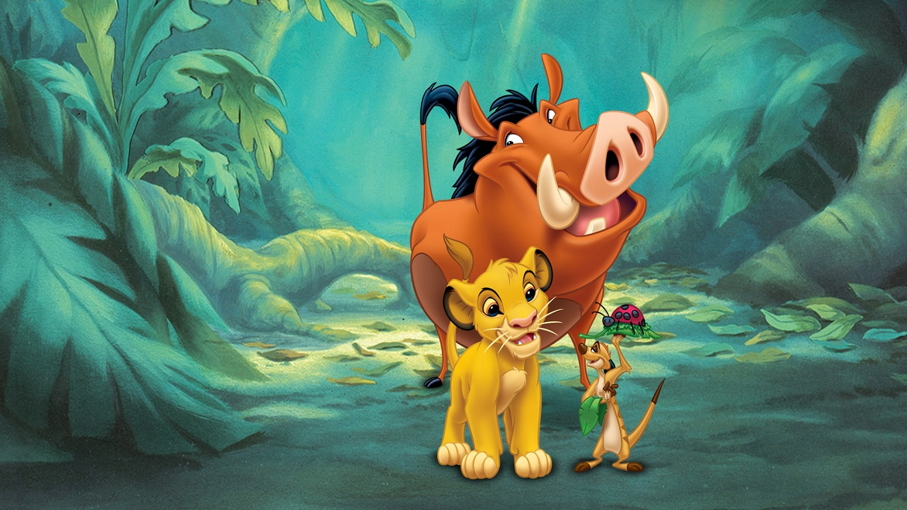
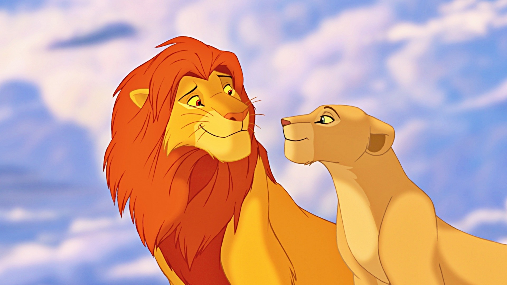

I am the son of Mufasa and Sarabi, Scar's nephew, Nala's mate, and Kiara and Kion's father. After defeating Scar, Simba take's Mufasa's place as King of Pride Rock before marrying Nala and having Kiara and Kion with her.
I was inspired by the character Bambi from Disney's Bambi (1942), as well as the stories of Moses and Joseph from the Bible. Additionally, several similarities have been drawn between me and Prince Hamlet from William Shakespeare's Hamlet.
My photos!

My best friends!

With Nala my love!
Smile to the world and the world will smile back at you
My favorite playlist
You probably won't be that surprise:
Give me a like!
Scan website code
Go straight to the website by scaning this code:
Q&A
ans:
1. main 3 diffrences:
a. web 1.o was not interactive, people recive information passively without the option to give feedback, comments or reviews. while on web 2.0 there is interaction between web users and sites.
b. in web 1.0 there was mainly personal web pages and info pages, The web master is solely responsible for updating users and managing the content of website. while in web 2.0 pages allows to share content and contribute content.
c. in web 3.0 computers can interpret information like humans and intelligently generate and distribute useful content tailored to the needs of users.
2. use case:
we want to search "Bat-Mizvha" on web 1.0 we will probably get results of static websites with information and explains on Bat-Mizvha.
if we will search it on web 2.0 we will get more results for example places to make Bat-Mizvha and blogs, reviews about it.
In web 3.0 we could see places to make Bat-Mizvha that are close to my location, and more information about the subject that is tailored to my needs.